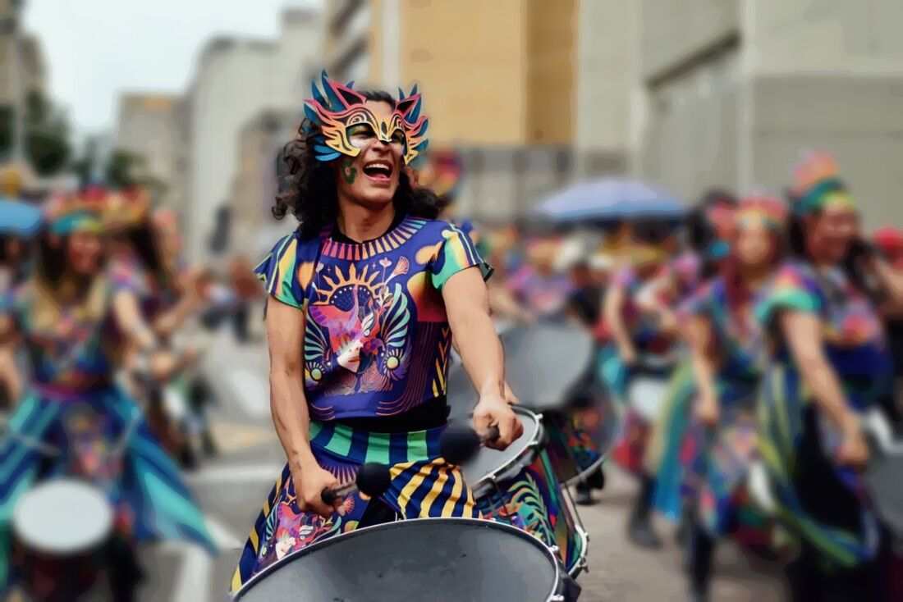
Programa · Temporada 2026
Guitarra · Percusión · Voz
Músico multiinstrumentista y docente en Bogotá. Producción musical, sonido en vivo, transcripción, arreglos y dirección de ensambles.
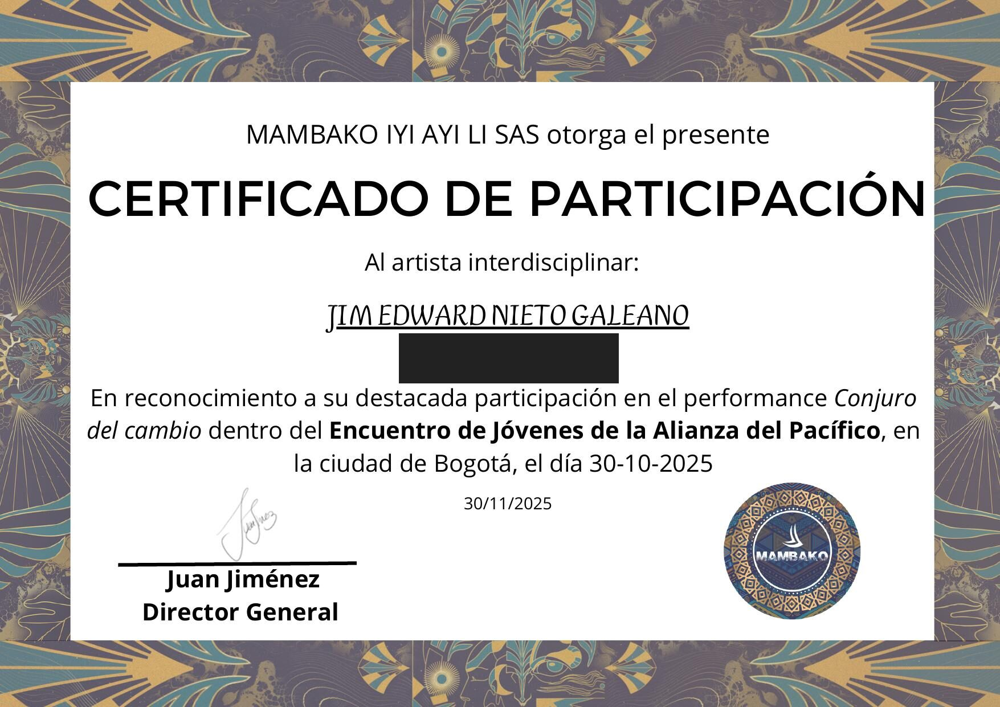
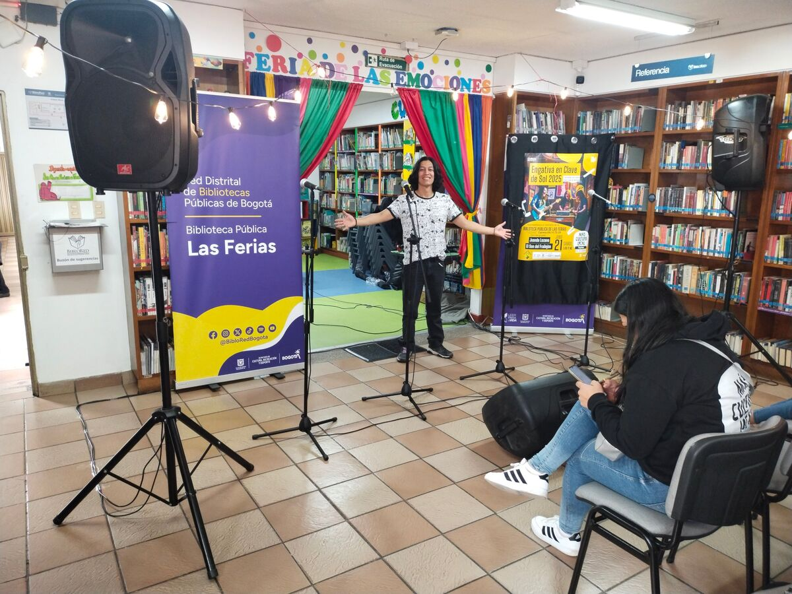
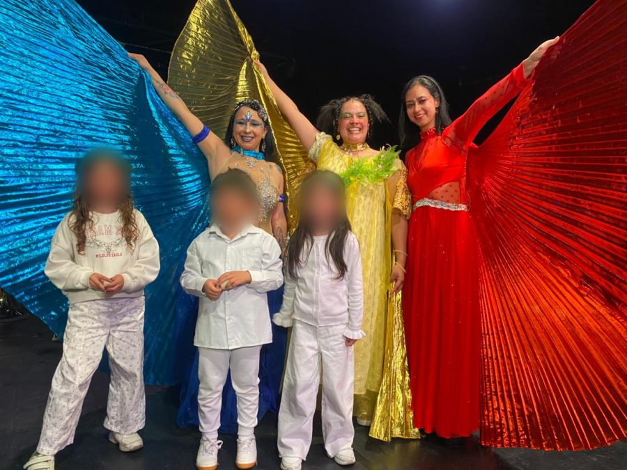
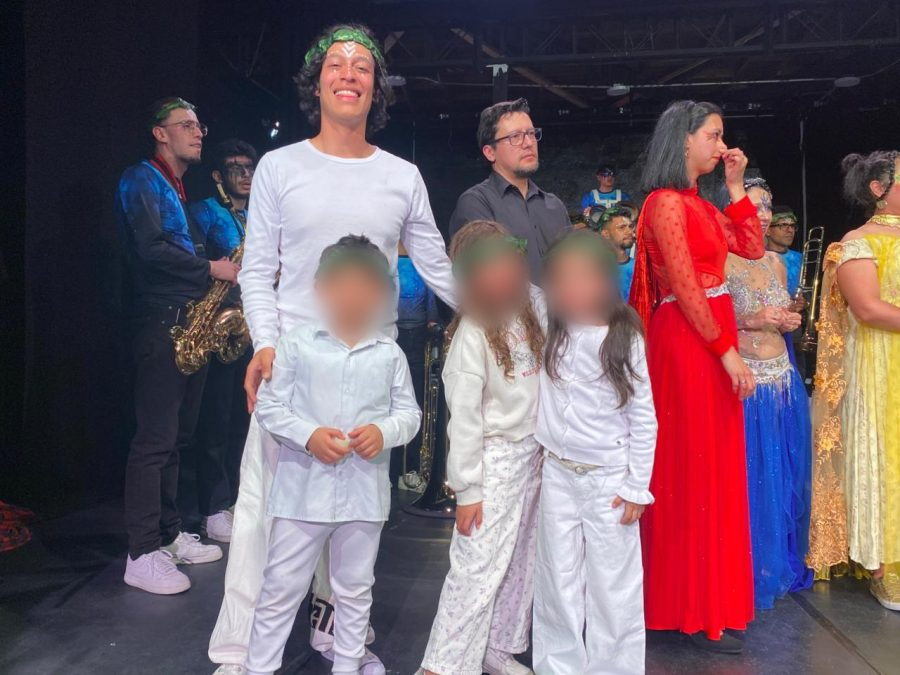
Asociación Católica Cristo Liberador
Transcribo, arreglo y enseño el repertorio para batería, piano, guitarra y voces.
Agrupación artística Mambako
Toco el trisurdo en formato batucada, con música y danza, en festivales, eventos y contrataciones privadas.
Colectivo Cultural Caminito Engativeño y Festival Cultural Faunos
Montaje de equipos, prueba de sonido y mezcla durante las presentaciones.
Escuela Musical Faunos
Clases individuales y grupales de guitarra, piano, técnica vocal, percusión e iniciación musical.
Escuela Musical Faunos
Audición, selección y dirección de niños de 5 a 14 años para la temporada navideña.
Batucada Clown, grupo itinerante
Repertorio de rock, baladas, folclor colombiano y música navideña para vientos y percusión, con puesta en escena clown.
Barbukana
Intérprete del repertorio y formador en música, baile y teatro para los grupos de iniciación.
George Washington School · Academia Musical En Sus Manos
Cursos vacacionales para niños de 10 a 15 años.
Jim Edward Nieto Galeano
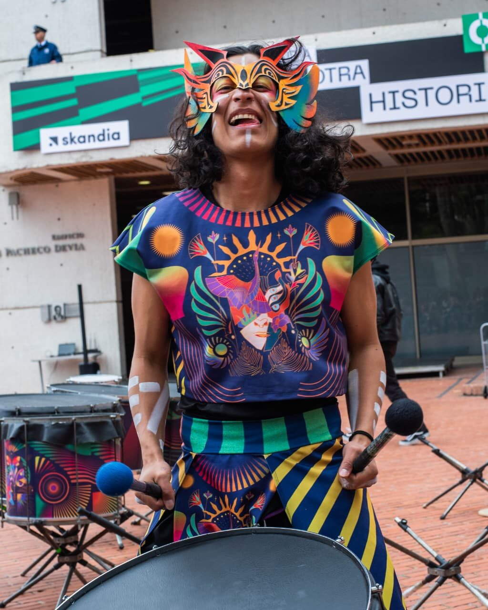
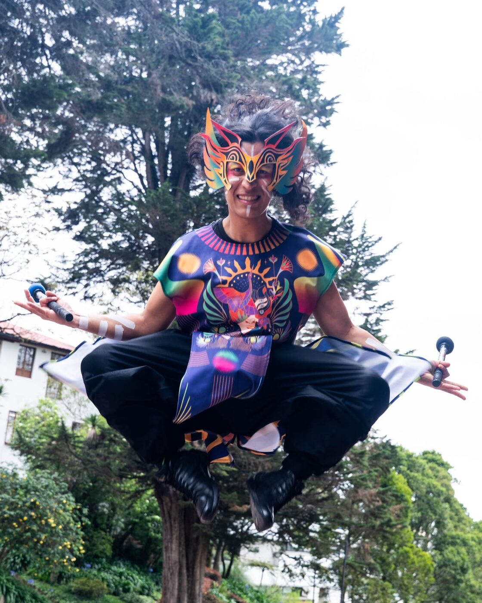
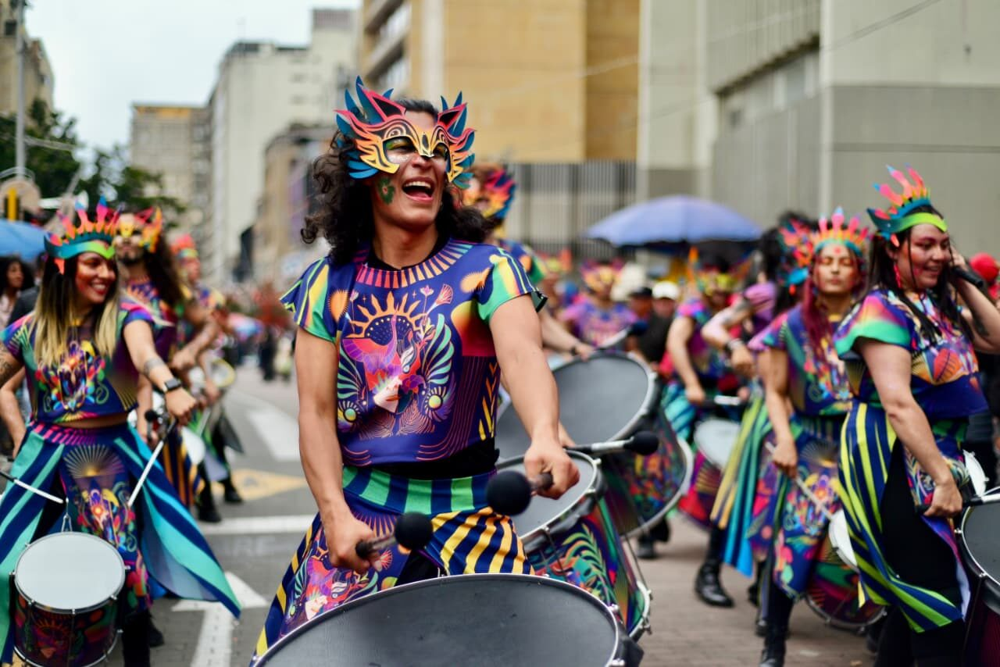
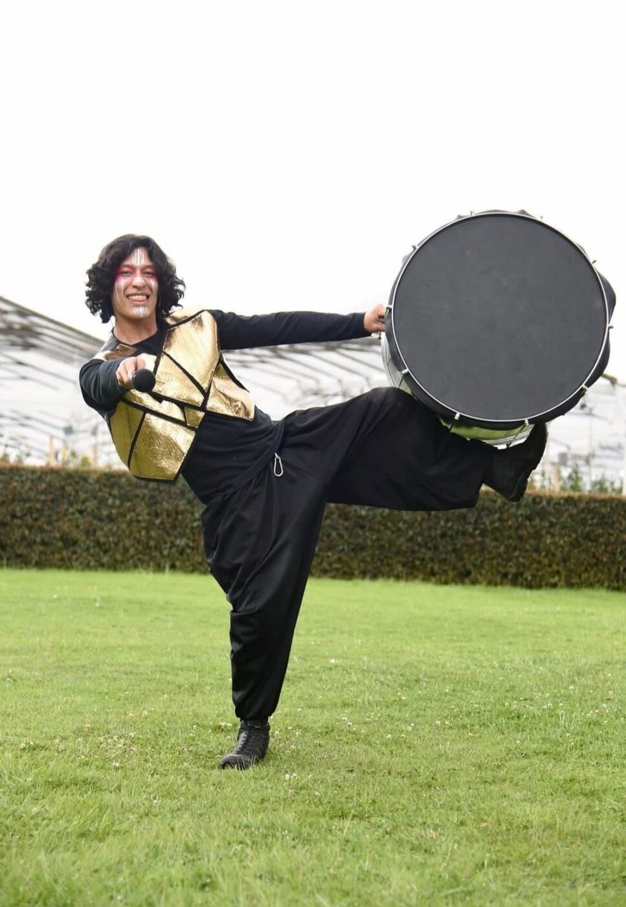
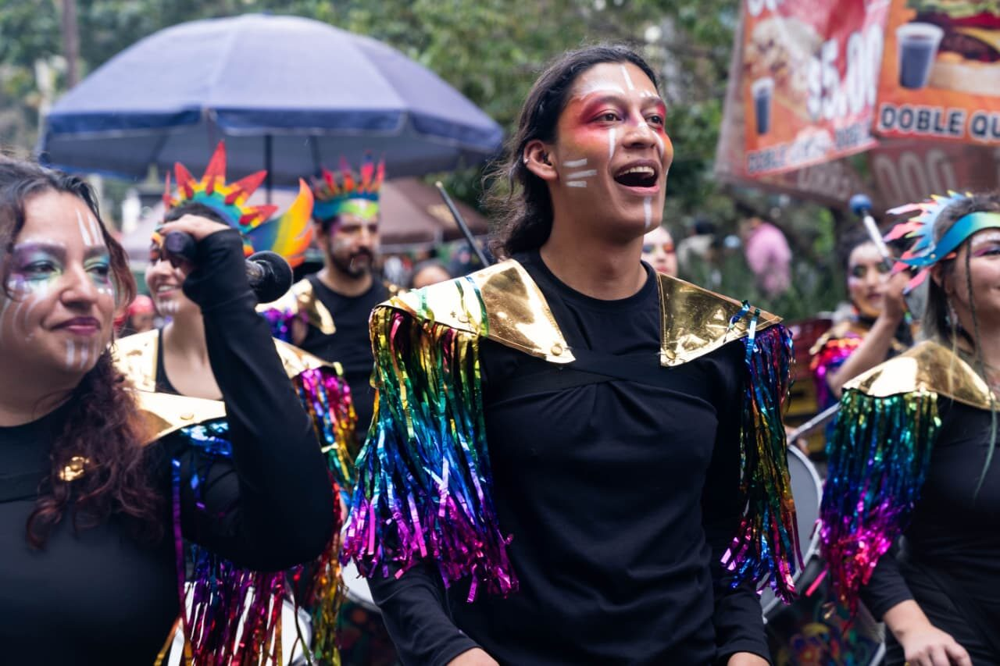
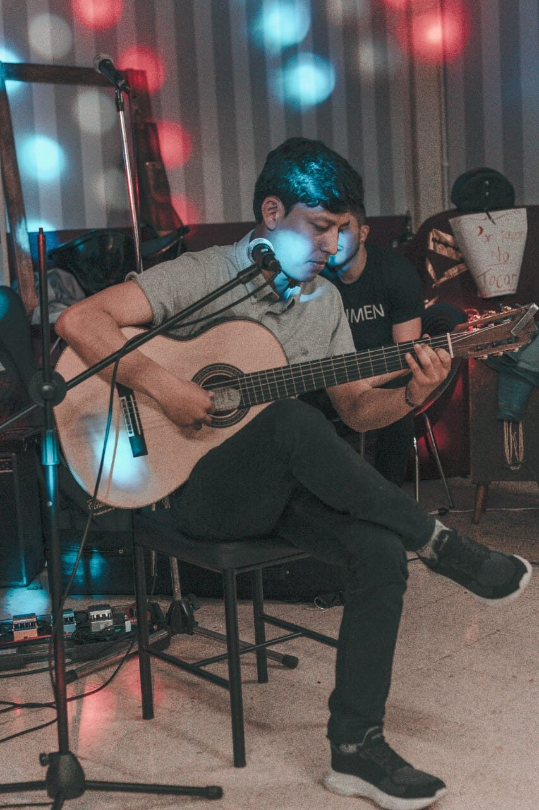
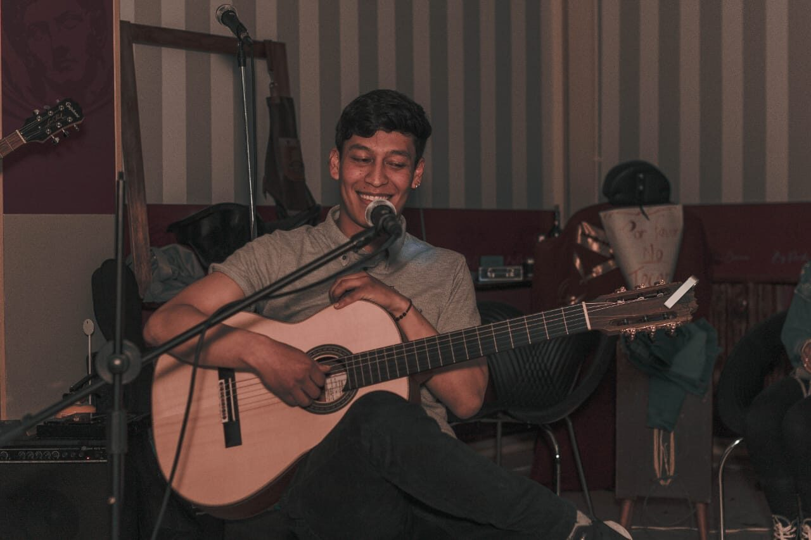
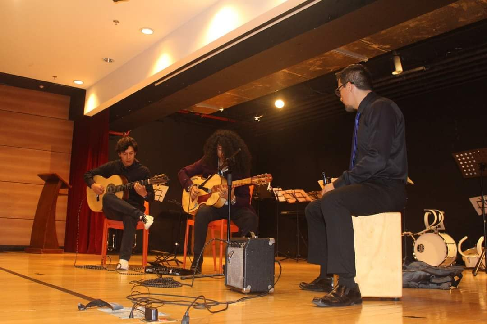